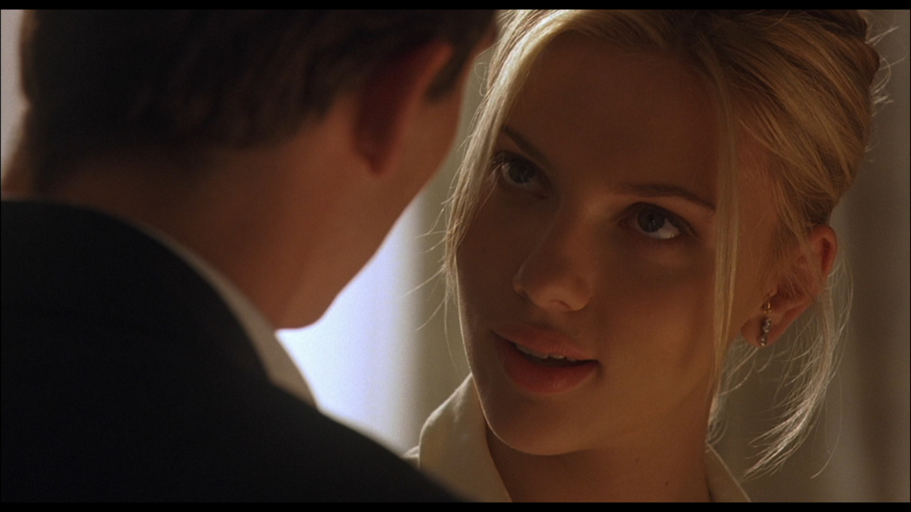

Travolta returned, Tarantino ascended and Samuel L. Jackson has been strenghten in faith.
"Whoa, whoa, whoa, whoa... stop right there. Eatin' a bitch out, and givin' a bitch a foot massage ain't even the same fuckin' thing."
This is the king of the cult movies, with the best quotes ever.
"Hey, look. I'm sorry I made you clean the toilets and the bathtubs, I mean, who did all the work in bed?"
I love all the movies of Woody Allen, but this one is where I fell in love to Scarlett Johansson.
